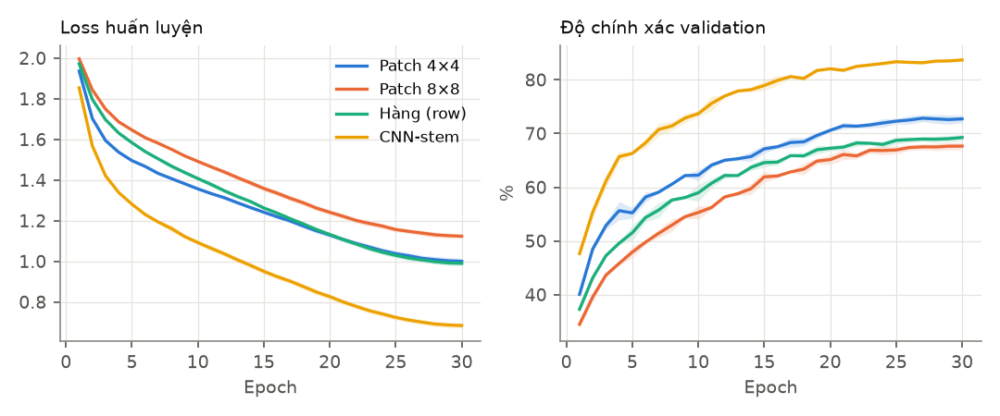
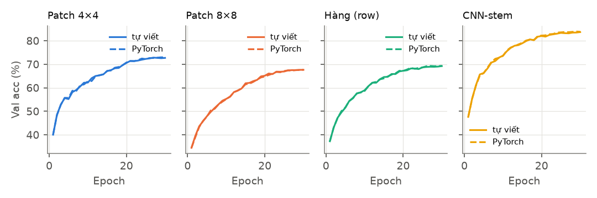
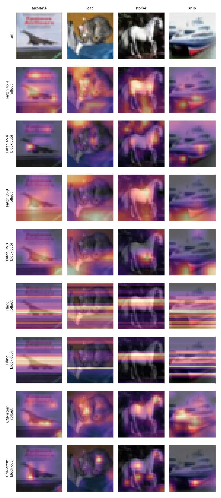
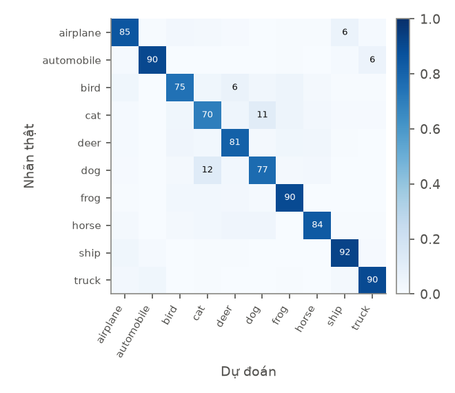
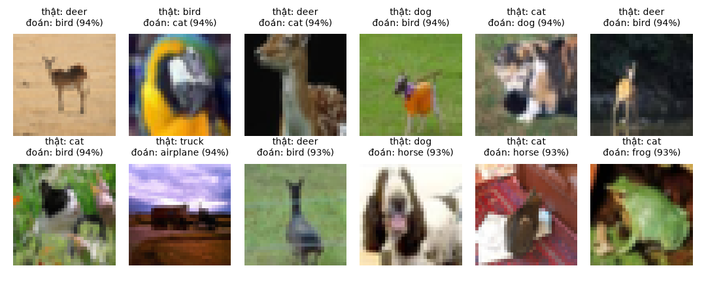

Multi-Head Self-Attention (MSA)
Hiện thực từ đầu & Cơ chế Tokenization
Công thức toán học & cấu trúc Self-Attention
Cơ chế Self-Attention cho phép các vector đặc trưng trong chuỗi tự tương tác và tính trọng số quan hệ theo ngữ cảnh. Với mỗi token ta tính Query ($Q$), Key ($K$) và Value ($V$).
MultiHead(X) = Concat(head_1, ..., head_h) · W^O
với head_i = Attention(X · W_i^Q, X · W_i^K, X · W_i^V), d_h = D / h
Hai bản hiện thực, cùng khởi tạo
MSAScratch chỉ dùng Linear, einsum, softmax và
reshape; MSATorch bọc nn.MultiheadAttention. Cả hai nhận đúng cùng bộ
trọng số (Xavier-uniform từ một generator theo seed, bias bằng 0), và phần còn lại của mô hình cũng được khởi
tạo lại từ một seed cố định, nên mọi khác biệt kết quả chỉ đến từ cách hiện thực. Bộ kiểm thử đơn vị xác nhận
đầu ra, ma trận chú ý (mỗi hàng tổng bằng 1) và gradient trùng nhau trong sai số $10^{-9}$ ở độ chính xác kép.
Khi không cần ma trận chú ý, PyTorch có thể dùng nhân tính toán gộp (fused), nên so sánh thời gian chỉ phản ánh
cách hiện thực.
Các cơ chế Tokenization từ ảnh 2D
Để đưa ảnh vào Transformer, ảnh cần được chuyển thành chuỗi token 1D. Với ảnh $32\times32$, nhóm so sánh 4
chiến lược (mỗi mô hình thêm một token [CLS] học được ở đầu chuỗi, đầu phân loại chỉ đọc token
này):
Các biến thể khác trong đề (patch chồng lấn, token theo kênh, token theo từng pixel với $N=1024$) không được đưa vào vì chúng không trả lời một câu hỏi mới ở quy mô này; ảnh hưởng của $N$ đến chi phí đã thể hiện qua $N=16, 32, 64$.
Cấu hình thực nghiệm
| Thành phần | Giá trị |
|---|---|
| Dữ liệu | CIFAR-10: 45 000 train / 5 000 validation (500 ảnh/lớp, seed 42) / 10 000 test chính thức |
| Mô hình | Encoder pre-norm 4 khối, $D=128$, 4 head, FFN 512, dropout 0.1, huấn luyện từ đầu |
| Tối ưu | AdamW, lr đỉnh 1e-3, weight decay 0.05, warmup 5% + cosine, cắt gradient 1.0, fp16 |
| Huấn luyện | 30 epoch, batch 128, random crop (pad 4) + lật ngang, label smoothing 0.1 |
| Báo cáo | Epoch cuối (không chọn checkpoint), test dùng một lần, trung bình ± std trên 3 seed |
Kết quả thực nghiệm & bảng so sánh
4.1. Đối chiếu: MSA tự viết vs. MSA PyTorch (cùng cơ chế Tokenize)
Hai bản MSA bắt đầu từ cùng trọng số, cùng thứ tự dữ liệu theo seed. Δ là hiệu trung bình theo cặp seed (tự viết − PyTorch), tính bằng điểm phần trăm.
Chênh lệch trung bình chỉ từ −0,18 đến +0,05 điểm, nhỏ hơn nhiều so với độ lệch chuẩn giữa các seed và không có dấu nhất quán (theo từng seed, lớn nhất là 0,68 điểm); hai bản về cơ bản tương đương. Bản PyTorch nhanh hơn khoảng 4 % (Patch 4×4, CNN-stem) đến 17–18 % (Patch 8×8, Row) mỗi epoch nhờ nhân tính toán gộp.
| Cơ chế Tokenize | Số tham số | Độ chính xác kiểm thử – tự viết (%) | Độ chính xác kiểm thử – PyTorch (%) | Δ | Giây/epoch – tự viết | Giây/epoch – PyTorch |
|---|---|---|---|---|---|---|
| Patch 4×4 + CLS | 809 354 | 72,42 ± 0,86 | 72,41 ± 1,03 | +0,02 | 9,1 | 8,6 |
| Patch 8×8 + CLS | 821 642 | 67,09 ± 0,84 | 67,04 ± 0,83 | +0,05 | 7,0 | 5,8 |
| Row + CLS | 811 402 | 68,96 ± 0,41 | 68,92 ± 0,16 | +0,04 | 6,8 | 5,7 |
| CNN-stem + CLS | 896 426 | 83,00 ± 0,41 | 83,19 ± 0,54 | −0,18 | 10,3 | 9,9 |
4.2. So sánh các cơ chế Tokenization khác nhau
MSA tự viết, 3 seed. $N{+}1$ gồm token [CLS]; thời gian là trung vị giây/epoch (huấn luyện, không
gồm validation); bộ nhớ là đỉnh GPU khi huấn luyện. Chi phí lý thuyết (triệu MACs/ảnh): Patch 4×4 55,8 ·
Patch 8×8 14,1 · Row 27,5 · CNN-stem 65,8.
- CNN-stem tốt nhất rõ rệt (83,00 %), hơn Patch 4×4 khoảng 10,6 điểm với chi phí chỉ tăng khoảng 13 % thời gian/epoch.
- Patch 4×4 hơn Patch 8×8 5,3 điểm nhưng gấp ≈ 4 lần MACs và ≈ 1,7 lần bộ nhớ.
- Row (68,96 %) nằm giữa; cao hơn Patch 8×8 ở cả ba seed, nhưng với n = 3 chênh lệch ≈ 1,9 điểm chỉ nên xem là gợi ý.
| Cơ chế Tokenization | Số token (N+1) | Số head (h) | Số tham số | Val acc. (%) | Test acc. (%) | Giây/epoch | Bộ nhớ GPU (MB) |
|---|---|---|---|---|---|---|---|
| Patch 4×4 + CLS | 64 + 1 | 4 | 809 354 | 72,73 ± 0,91 | 72,42 ± 0,86 | 9,1 | 450 |
| Patch 8×8 + CLS | 16 + 1 | 4 | 821 642 | 67,65 ± 0,85 | 67,09 ± 0,84 | 7,0 | 265 |
| Row + CLS | 32 + 1 | 4 | 811 402 | 69,25 ± 0,74 | 68,96 ± 0,41 | 6,8 | 323 |
| CNN-stem + CLS | 64 + 1 | 4 | 896 426 | 83,69 ± 0,32 | 83,00 ± 0,41 | 10,3 | 487 |


4.3. Vai trò của positional embedding
| Tokenizer | Có positional embedding – test (%) | Không có – test (%) | Δ |
|---|---|---|---|
| Patch 4×4 + CLS | 72,42 ± 0,86 | 64,78 ± 0,31 | −7,65 |
| Row + CLS | 68,96 ± 0,41 | 62,20 ± 0,65 | −6,76 |
Bỏ positional embedding làm giảm 7,65 điểm (Patch 4×4) và 6,76 điểm (Row), lớn hơn nhiều so với nhiễu giữa các seed; độ chính xác huấn luyện cũng giảm (≈ 77 % → 71 % ở Patch 4×4), tức mô hình mất khả năng biểu diễn chứ không chỉ khái quát kém hơn. Thí nghiệm không chạy cho CNN-stem.
Trực quan hóa bản đồ chú ý (Attention Maps)
Với mỗi tokenizer, ta vẽ attention rollout (nhân các ma trận chú ý trung bình theo head, đã cộng
residual, qua các khối) từ [CLS] đến token đầu vào, và chú ý của [CLS] ở khối cuối.
Đây là công cụ gợi ý để kiểm tra mô hình có tập trung vào vật thể hay không, không phải bằng chứng về nguyên
nhân quyết định.

[CLS] cho 4 ảnh test (máy bay, mèo, ngựa, tàu).
Mô hình tự viết, seed 0.


Với CNN-stem, lớp dễ nhất là ship (92,2 %), automobile (90,4 %), frog (89,6 %); khó nhất là cat (69,8 %), bird (74,8 %), dog (77,2 %). Cặp nhầm nhiều nhất: cat↔dog (111 và 120 ảnh), bird→deer (63), airplane→ship (59), automobile→truck (58).
Nhận xét: rollout của Patch 4×4 và CNN-stem tập trung khá rõ vào vật thể (thân ngựa, tàu, máy bay), còn chú ý ở khối cuối thường dồn vào vài điểm cục bộ và đôi khi rơi vào nền. Với Row, bản đồ là các dải ngang vì mỗi token là cả một hàng. Chỉ trên bốn ảnh và một seed, nên chỉ mang tính minh họa.
Tái lập và khai báo sử dụng AI
Mã nguồn, cấu hình, seed và tệp kết quả JSON nằm trong thư mục E2/. Kiểm thử:
python -m unittest discover -s E2/tests; đo nhanh thời gian trên máy:
python -m e2lib.bench; chạy toàn bộ: python -m e2lib.plan (khoảng 2,5 giờ trên RTX
3050 Laptop; có thể dừng và chạy tiếp); bảng và hình: python -m e2lib.analyze. Tệp JSON kết quả của
cả 30 lần chạy được giữ trong E2/results/, nên có thể chỉ nạp lại kết quả mà không cần huấn luyện
lại. Chi tiết trong E2/README.md.
Notebook tái lập:
E2/notebooks/E2.ipynb
(mở bằng Colab). Notebook có hai chế độ, chọn bằng biến MODE ở ô đầu tiên:
"load" (mặc định) nạp kết quả đã lưu, sinh lại các bảng và hình rồi kiểm tra chúng khớp với bảng
trong báo cáo (vài phút, chạy được trên Colab miễn phí chỉ với CPU); "rerun" huấn luyện lại cả 30
lần chạy từ đầu (cần GPU, khoảng 2,5 giờ trên RTX 3050 Laptop) và so sánh với kết quả đã công bố. Trọng số và
logit kiểm thử nằm trong GitHub Release weights-v1, có kiểm tra mã băm SHA-256. Dữ liệu CIFAR-10
được tải qua thư viện datasets (Hugging Face) và chỉ được chấp nhận khi mã băm của dữ liệu trùng
với
bản TorchVision dùng cho phép chia cố định.
Nhóm lên ý tưởng và tự viết bản gốc của mã. Công cụ AI (ChatGPT / Claude) hỗ trợ cải thiện và rà soát mã, xây dựng bộ kiểm thử và bản nháp báo cáo. Nhóm đã đọc, kiểm tra, hoàn thiện báo cáo và chịu trách nhiệm về toàn bộ nội dung.